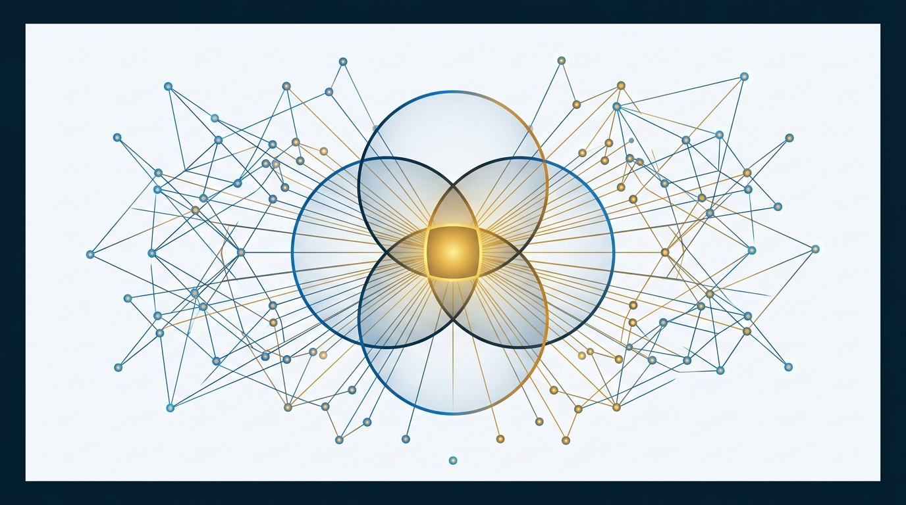

SLIDE 01 / 16 ｜ EXECUTIVE BRIEFING COVER & CORE THESIS
總綱與轉型基準
擺脫「月薪成癮」的工資奴役陷阱：以 6P 事業系統 將個人熱愛轉化為高槓桿、可規模化的超級個體事業
EXHIBIT 1 ｜ AUTHOR TRANSFORMATION & WEALTH TRAJECTORY
凱莉彭「矽谷裁員→超級個體」轉型時間軸與財富雙軌對比

資料來源：《把熱愛變成事業》前言與第 1 章（凱莉彭，2026）。註：書中金額單位為人民幣。
📖 書籍定位與核心命題（Why This Book Matters）
- 作者背景：武漢大學本科、伊利諾大學香檳分校碩士、前矽谷 Airbnb 資料科學家（曾領近七位數美元年薪，卻陷入「上班如上墳」的心理消耗）。
- 核心覺醒：大公司響亮名號的紅利有時間與空間限制；經營個人品牌與自有事業，才是真正帶得走的複利資產。
- 全書主線：展開 6P 事業公式（熱愛 Passion → 圈子 Peer Group → 個人品牌 Personal Brand → 產品 Product → 銷售 Promotion → 合作夥伴 Partnerships）。
🎯 資深創業顧問給「評估轉型者」的三個先決判斷點
- 判斷點 1｜絕不跳過第 1 章財務基準線：後八章所有方法都預設你有「無收入可撐半年到一年」的緩衝；沒有這條線，MVP 試錯與複利等待都不成立。
- 判斷點 2｜先驗證需求，再談品牌與規模：對已有專業技能者，第 5 章「一對一付費諮詢」是成本最低起點，同時驗證需求、交付力並創造現金流，且不需粉絲量。
- 判斷點 3｜跨市場工具轉譯（顧問延伸推論）：原書綁定大陸微信私域生態；在台灣市場須轉譯為 LINE OA ／ IG ／ Threads ／ FB 社團，「私域＝可反覆觸達的名單」本質不變。
| 評估維度 | 傳統職場打工思維（安祖爾搬磚） | 本書超級個體事業思維（朱瑪造系統） | 學員閱讀本書前必設護欄（顧問校準） |
|---|---|---|---|
| 財務與風險觀 | 收入隨升職增加，但生活水準同步膨脹，被迫依賴下月薪水。 | 生活水準遠低於收入水準（如作者住 650 美元客廳），換取選擇自由。 | 計算過去 3 個月「支出÷稅後收入」，必須壓在 70% 以下並開立獨立儲備金帳戶。 |
| 變現啟動時機 | 等準備好完美證照、等副業超過主業、等累積十萬粉絲才敢賣。 | 先開槍再瞄準：2 萬粉 0 變現敢轉型、1,000 鐵桿粉絲即可活、先賣海報再做課。 | 已有領域經驗者，直接跳到第 5 章接 3–5 位一對一付費諮詢，不走漫長散養漲粉路。 |
| 組織與時間觀 | 用一份時間換一份薪水；創業就想租辦公室、招全職員工、找合夥人。 | 善用零邊際成本數位槓桿；在路上找人，近 3 年 0 全職員工（全按量結算兼職）。 | 書中案例 100% 為存活成功者（倖存者偏差），每項試錯必須自設時間與金額停損點。 |
💡 Takeaway 關鍵結論：多數人創業失敗不在中間五步做錯，而在頭（Ch1 現金儲備不足）尾（Ch9 時間被緊急瑣事吃光）失守。
章節對應：前言、第 1 章、全書整合建議
🎙️ 麥肯錫顧問三段式講稿備忘錄（點擊展開／快捷鍵 N）
Slide 01 Notes ▾
① 本頁結論：本書旨在幫助受困於「月薪成癮」的職場專業人士，透過 6P 事業模型與數位槓桿，低風險走通「小而美超級個體」的商業閉環。
② 補充說明：作者凱莉彭曾任矽谷 Airbnb 資料科學家，年薪近百萬美元，卻在 2020 年遇上裁員 25%（1,900 人）與 30 多歲同事突發腦出血進 ICU 的衝擊。她在 2022 年 2 月以 2 萬粉絲、0 元變現裸辭，一年內營收超越矽谷年薪。顧問特別提醒：閱讀本書須先守住「半年至一年生活儲備金」的底線。
③ 下一頁轉場：理解了作者的轉型起點後，下一頁我們用一張全書架構圖，看清 6P 模型與九大章節是如何環環相扣、層層推進的。
② 補充說明：作者凱莉彭曾任矽谷 Airbnb 資料科學家，年薪近百萬美元，卻在 2020 年遇上裁員 25%（1,900 人）與 30 多歲同事突發腦出血進 ICU 的衝擊。她在 2022 年 2 月以 2 萬粉絲、0 元變現裸辭，一年內營收超越矽谷年薪。顧問特別提醒：閱讀本書須先守住「半年至一年生活儲備金」的底線。
③ 下一頁轉場：理解了作者的轉型起點後，下一頁我們用一張全書架構圖，看清 6P 模型與九大章節是如何環環相扣、層層推進的。
創業策略思考知識庫 ｜ BOOK #001《把熱愛變成事業》
McKinsey Executive Briefing Format • Page 1 of 16
SLIDE 02 / 16 ｜ FULL-BOOK ARCHITECTURE & 6P ENGINE
全書邏輯骨架
全書架構總覽：以「6P 事業模型」為核心引擎，串聯地基、驗證、放大三階段與頭尾風險時間護欄
EXHIBIT 2 ｜ 3-LAYER ARCHITECTURE & TENSION LINKS
九大章節實線依賴關係（前提）與虛線張力關係（校準）
資料來源：整理自《把熱愛變成事業》逐章分析第三節「章節關係網絡圖」。
🔗 實線依賴邏輯：為什麼順序不能顛倒？
- 熱愛 (Ch2) → 圈子 (Ch3) & 品牌 (Ch4)：先有熱愛才能持續輸出；熱愛需在圈子裡碰撞，圈內痛點正是第一代產品 (Ch5) 的需求來源。
- 單品驗證 (Ch5) → 產品體系 (Ch6)：單一產品被市場真金白銀驗證後，才向上疊加產品階梯；切忌一開始就搭完整階梯。
- 規模交付 (Ch6/Ch7) → 合作夥伴 (Ch8)：銷售放量後才產生交付人力需求，且最先外包「交付運營」，最後才分出「內容流量」。
⚡ 四組關鍵張力關係（需動態校準）
- Ch1 ⇢ Ch5（風險前提）：必須先有半年至一年財務緩衝，才有底氣做 MVP 試錯而不致因短期無收入崩潰。
- Ch4 ⇢ Ch7（專業 vs 流量／粉絲 vs 私域）：既要具備領先 3–4 級的專業，又不能講專業黑話；公域漲粉若不導流私域則毫無抗風險力。
- Ch7 ⇢ Ch6（低價走量 vs 精準高客單）：無百萬流量時賣 199 元課必虧，應走 1,000–10,000 精準粉絲的高客單升階路徑。
| 階層 | 章節與對應 6P | 本章解決的核心問題 | 代表性工具與法則 | 關鍵量化指標 (KPI) |
|---|---|---|---|---|
| 🟦 地基層 | Ch1 逃離陷阱 ／ Ch2 熱愛(P1) ／ Ch3 圈子(P2) | 如何存夠試錯底氣？如何找到可變現的差異化優勢並借外力啟動？ | 三條脫離路徑、6P模型、IKIGAI、1,000鐵桿粉絲、五人平均值、先當群紅 | 支出占收入＜70%；副業達主業 50% 轉正；新社群無償幫人 ≥3 次 |
| 🟩 驗證層 | Ch4 品牌(P3) ／ Ch5 產品(P4) ／ Ch7 銷售(P5) | 如何讓目標客群看見並信任你？如何零成本驗證真需求並高價成交？ | 定位公式、私域 5 步、Why 3問、老媽測試、海報 MVP、7-11-4 與 5C 原則 | 海報預售 ≥5–10 份付款；1對1諮詢 ≥3 單；觸達 7小時×11次×4平台 |
| 🟨 放大層 | Ch6 放大規模 ／ Ch8 夥伴(P6) ／ Ch9 槓桿複利 | 如何突破一人時間上限，將單品升級為年入百萬至千萬的複利系統？ | 產品階梯、收入四階段、在路上找人、非雇傭兼職、納瓦爾三大槓桿 | 產品階梯提升 LTV 30%–50%；0 全職彈性外包；每週鎖定 ≥3 小時重要不緊急事 |
💡 Takeaway 關鍵結論：把 Ch4（品牌）、Ch5（產品）、Ch7（銷售）視為「最短現金流三角閉環」——先跑通這三角，再開啟 Ch6 與 Ch8 的放大引擎。
章節對應：全書整合建議、章節關係網絡圖
🎙️ 麥肯錫顧問三段式講稿備忘錄（點擊展開／快捷鍵 N）
Slide 02 Notes ▾
① 本頁結論：全書九章可解構為「地基層、驗證層、放大層」三階架構，並由 6P 模型串聯成一條嚴密的因果鏈。
② 補充說明：請特別留意圖中的綠色區塊「驗證層（Ch4, 5, 7）」，這是個人創業者最短的現金流閉環。很多人的失敗在於地基還沒打穩、或者單品還沒在驗證層賣出去，就急著去放大層搭四層產品階梯或招全職員工。
③ 下一頁轉場：接下來我們正式進入第一階段「地基層」，從第 1 章如何逃離每月領工資的成癮陷阱開始。
② 補充說明：請特別留意圖中的綠色區塊「驗證層（Ch4, 5, 7）」，這是個人創業者最短的現金流閉環。很多人的失敗在於地基還沒打穩、或者單品還沒在驗證層賣出去，就急著去放大層搭四層產品階梯或招全職員工。
③ 下一頁轉場：接下來我們正式進入第一階段「地基層」，從第 1 章如何逃離每月領工資的成癮陷阱開始。
創業策略思考知識庫 ｜ BOOK #001《把熱愛變成事業》
McKinsey Executive Briefing Format • Page 2 of 16
SLIDE 03 / 16 ｜ CHAPTER 1 (PART A): ESCAPING THE SALARY TRAP
🟦 地基層：風險護欄
第 1 章（上）逃離工資陷阱：控制支出增速低於收入增速，並以「副業達主業 50%」作為理性轉正門檻
EXHIBIT 3 ｜ LIFESTYLE CREEP VS. FREEDOM GAP
工資奴役陷阱（支出隨加薪膨脹）vs. 選擇權剪刀差（生活水準＜收入）
資料來源：《把熱愛變成事業》第 1 章。作者裸辭前刻意搬入月租 650 美元客廳，大幅壓低固定燃燒率。
📌 重點摘要：月薪枷鎖與三條脫離路徑
- 工資奴役陷阱：月薪具高度成癮性，一旦生活品質隨加薪同步升級（買豪車、背高額房貸），就會徹底喪失說「不」的自由。
- 脫離陷阱三路徑：① 被動改變（裁員、重病等外力推一把，不可控）；② 主動準備（存夠半年至一年生活儲備金再探索）；③ 主業外發展副業（待成熟後轉正，風險最低）。
- 轉正量化門檻：副業轉正不需要超過主業收入！只要達到主業收入的一半（50%），或判斷其具備「可持續、可複製、可放大」三特質即可考慮轉型。
💡 顧問亮點洞察：破除兩大拖延藉口
- 破除「副業打平主業才敢辭」盲點：多數人默認副業要 100% 追平主業才敢辭，但在只用下班零碎時間的情況下極難達成，導致無限期拖延；「50% 門檻＋三特質」把模糊恐懼轉為具體財務指標。
- 破除「等賺多一點再存錢」盲點：自由的關鍵不是絕對薪資高低，而是「支出增速是否落後於收入增速」——這是任何收入層級今天就能動手控制的變數。
| 脫離工資陷阱路徑 | 觸發條件與特徵 | 風險等級 | 轉正／啟動核心檢核指標 | 本週／本月立即落地行動 |
|---|---|---|---|---|
| 路徑一：被動改變 | 遭遇裁員、生病、家庭變故等不可控外部衝擊（如作者 2020 年被 Airbnb 裁員）。 | 極高（不可控） | 平時是否已備妥緊急預備金與可帶走的個人品牌／技能？ | 切勿等外力降臨才準備；立即啟動路徑二與路徑三的雙重布局。 |
| 路徑二：主動準備（儲備金） | 刻意壓低生活物慾，存夠 6–12 個月生活儲備金後給自己一段全職探索期。 | 中等（需自律） | 支出／稅後收入比例是否 ＜70%？獨立儲備帳戶是否達標？ | 本週：盤點近 3 月支出，若＞70% 立即砍 1 項固定支出（目標降 5 個百分點）；開立獨立帳戶存入月生活費 ≥10%。 |
| 路徑三：副業成熟轉正（首選） | 白天保住主業現金流，不加班、不爬職場梯子，把下班與週末全投入副業測試。 | 最低（最穩健） | ① 副業月收 ≥ 主業月收 50%；或 ② 具備可持續、可複製、可放大三特質。 | 本月：計算近 3 月「副業÷主業」收入比；若無副業，本月內選定 1 項技能完成首次小規模收費嘗試。 |
💡 Takeaway 關鍵結論：不要用「我在等機會」自我安慰——誠實檢視自己正走在哪一條脫離路徑，本週先把支出比砍進 70% 以內。
章節對應：第 1 章《逃離陷阱》（上）
🎙️ 麥肯錫顧問三段式講稿備忘錄（點擊展開／快捷鍵 N）
Slide 03 Notes ▾
① 本頁結論：逃離工資陷阱的第一步是拉開「收入與支出的剪刀差」，並以「副業達主業 50% 或具三特質」作為理性離職判準。
② 補充說明：作者在矽谷年薪近百萬美元時，為了準備裸辭，主動搬進月租僅 650 美元的客廳隔間。她指出多數人不敢改變是因為消費隨薪資同步升級。顧問建議本週立即核算近三個月支出占比，若超過 70%，先砍除一項固定訂閱或非必要開支，讓支出率下降至少 5%（此 5% 為顧問延伸量化指標）。
③ 下一頁轉場：有了財務緩衝與脫離路徑後，思維上該如何從「打工人」切換成「創業者」？下一頁我們拆解五大思維躍遷與 6P 模型。
② 補充說明：作者在矽谷年薪近百萬美元時，為了準備裸辭，主動搬進月租僅 650 美元的客廳隔間。她指出多數人不敢改變是因為消費隨薪資同步升級。顧問建議本週立即核算近三個月支出占比，若超過 70%，先砍除一項固定訂閱或非必要開支，讓支出率下降至少 5%（此 5% 為顧問延伸量化指標）。
③ 下一頁轉場：有了財務緩衝與脫離路徑後，思維上該如何從「打工人」切換成「創業者」？下一頁我們拆解五大思維躍遷與 6P 模型。
創業策略思考知識庫 ｜ BOOK #001《把熱愛變成事業》
McKinsey Executive Briefing Format • Page 3 of 16
SLIDE 04 / 16 ｜ CHAPTER 1 (PART B): 5 MINDSET SHIFTS & 6P MODEL
🟦 地基層：6P 事業總綱
第 1 章（下）走上創業快車道：完成五大生產者思維躍遷，並以 6P 模型 動態配置不同階段資源
EXHIBIT 4 ｜ THE 6P BUSINESS FLYWHEEL & PIPELINE PARABLE
把熱愛變成事業的「6P 六邊形要素模型」與搬磚 vs. 造機器對比
資料來源：《把熱愛變成事業》第 1 章（安祖爾搬磚 vs. 朱瑪造機器寓言、6P 模型）。
🏗️ 安祖爾搬磚 vs. 朱瑪造機器：指數級差異的根源
- 線性出賣時間（搬磚）：打工族按小時或月領取固定報酬，一旦停止搬磚，收入立刻歸零，且體力與時間有絕對上限。
- 打造可規模化系統（造機器）：創業者前期花時間設計內容、產品與自動化交付系統，初期看似慢，但機器運轉後產生脫鉤於時間的指數級回報。
- 影響力公式（規模 × 深度）：要麼做大廣度（影響十萬人），要麼做深單客價值（深度解決高痛點問題收高價）——超級個體起步應先攻「深度」。
🧭 6P 模型的動態優先級（不同階段重點不同）
- 0 到 1 探索期：優先搞定 Passion（熱愛）與 Peer Group（圈子），找到方向與第一批同頻支持者。
- 1 到 10 變現期：全力聚焦 Product（產品）、Personal Brand（個人品牌）與 Promotion（銷售），跑通最小現金流閉環。
- 10 到 100 放大期：引入 Partnerships（合作夥伴／非雇傭網絡），放大系統規模。
| 6P 要素 | 核心檢核問題（用一句話寫下現狀：有／沒有／待加強） | 起步階段常見誤區 | 本月落地行動與量化成功指標 (KPI) |
|---|---|---|---|
| 1. Passion 熱愛 | 我是否有一件在看不到短期回報時，仍願意持續投入 3 個月以上的事？ | 把三分鐘熱度的「消費型興趣」誤當成可生產的「熱愛」。 | 行動 1（6P自評）：本月對照左列 6P 清單逐項用一句話寫下現狀，標出最弱的 1–2 項作為下個月優先補強重點。 行動 2（環境淨化）：列出 3 位勸你「別冒險」的人與 3 位支持你探索的人，本月與支持者完成 1 次實質深度對話並記錄具體建議。 |
| 2. Peer Group 圈子 | 我身邊最常接觸的 5 個人，是在打壓我還是已經走在我嚮往的創業路上？ | 留在原打工圈問同事「我該不該離職創業」，得到100%勸退。 | |
| 3. Personal Brand 品牌 | 外界提起我時，是否有清晰的專業標籤與持續輸出的公開作品？ | 埋頭苦幹當職場「隱形人」，誤以為酒香不怕巷子深。 | |
| 4. Product 產品 | 我是否有一個能幫客戶解決具體痛點、且有人願意真金白銀付費的服務？ | 沒有產品只靠「用愛發電」，或憋大招錄課半年卻無人買單。 | 行動 3（首次變現測試）：選定 1 項現有技能，在本月內完成第一次「從消費者變生產者」的變現嘗試（接 1 單諮詢或發 1 篇付費/導流內容），產出具體數據紀錄。 |
| 5. Promotion 銷售 | 我是否敢大方談錢、並在私域建立持續穩定觸達的銷售轉化機制？ | 臉皮薄不好意思向熟人或粉絲收費，等流量大了才敢賣。 | |
| 6. Partnerships 夥伴 | 我是否擁有教練補足認知短板，以及按工作量結算的彈性兼職協力網？ | 還沒跑通業務就拉朋友合夥分股權，或過早聘請全職員工。 |
💡 Takeaway 關鍵結論：點子不值錢，執行才是王道！今天就把手機從「消費工具」切換為「生產工具」，完成你的 6P 現狀自評表。
章節對應：第 1 章《逃離陷阱》（下）
🎙️ 麥肯錫顧問三段式講稿備忘錄（點擊展開／快捷鍵 N）
Slide 04 Notes ▾
① 本頁結論：從打工慢車道切入創業快車道，必須完成五大生產者思維轉變，並用 6P 模型定期盤點事業短板。
② 補充說明：書中引用安祖爾搬磚與朱瑪造機器的故事說明：打工是線性出賣時間，造系統才能享受指數級複利。請學員本週務必完成表格中的「6P 一句話自評表」，找出當下最卡關的 1–2 項優先突破。
③ 下一頁轉場：6P 的第一個 P 是 Passion（熱愛）。到底該怎麼區分一時興起與真正的超能力？下一頁進入第 2 章。
② 補充說明：書中引用安祖爾搬磚與朱瑪造機器的故事說明：打工是線性出賣時間，造系統才能享受指數級複利。請學員本週務必完成表格中的「6P 一句話自評表」，找出當下最卡關的 1–2 項優先突破。
③ 下一頁轉場：6P 的第一個 P 是 Passion（熱愛）。到底該怎麼區分一時興起與真正的超能力？下一頁進入第 2 章。
創業策略思考知識庫 ｜ BOOK #001《把熱愛變成事業》
McKinsey Executive Briefing Format • Page 4 of 16
SLIDE 05 / 16 ｜ CHAPTER 2: PASSION, IKIGAI & 1,000 TRUE FANS
🟦 地基層：P1 發現熱愛
第 2 章 發現熱愛與超能力：脫掉「孔乙己的長衫」，在實踐中尋找「熱愛×擅長×解決真實問題」的變現交集
EXHIBIT 5 ｜ IKIGAI INTERSECTION & 1,000 TRUE FANS MODEL
IKIGAI 四象限超能力交集 × 凱文·凱利「1,000 鐵桿粉絲」小眾變現基礎

資料來源：《把熱愛變成事業》第 2 章（引用 Kevin Kelly 鐵桿粉絲理論、Adam Grant《隱藏的潛能》）。
🦸 重點摘要：超能力藏在你「與眾不同」的地方
- 熱愛 ≠ 興趣，且靠「實踐驗證」而非僅靠測評：作者做過蓋洛普、PDP、MBTI，但真正找到方向是在行動中觀察自己做什麼事最輕鬆愉快、比別人好。
- 古怪特質就是超能力：引用凱文·凱利「孩提時代顯得古怪的東西可能讓你成年後變得偉大」（如作者曾被嘲笑寫「雞湯」，卻成高共鳴個人特色）。
- 性格技能大於天賦（《隱藏的潛能》）：決定潛力挖掘的是後天可訓練的性格技能（堅韌、合作、專注、自律），而非天生智力。
🎓 顧問亮點洞察：為什麼履歷越光鮮、越難踏出第一步？
- 脫掉「孔乙己的長衫」：名校與大廠菁英包袱最重——害怕丟臉、無法承受初期 0 按讚的挫敗、總想「等準備完美再開始」（用更多學習逃避行動）。
- 刺破兩大不行動藉口：① 誤信「成功者都是天才或運氣好，我是普通人」；② 用「家庭責任（有伴侶小孩）」當作不敢追求熱愛、害怕失敗的遮羞布。
| 四大超能力探索工具類 | 書中具體方法與框架 | 解決的認知盲區 | 本週／本月落地行動與成功指標 (KPI) |
|---|---|---|---|
| 1. 自我探索法 | 價值觀澄清、心流分析、高光時刻記錄、小規模試驗迭代 | 只憑空想找熱愛，忽略身體與情緒在真實行動中的正回饋。 | 本週：寫下人生中至少 5 個高光時刻（最有成就感、忘記時間），歸納出至少 1 個反覆出現的共同主題。 |
| 2. 結構化框架 | IKIGAI 四象限（熱愛×擅長×世界需要×有報酬）、設計思維三階段 | 避免陷入「自嗨式愛好」卻無法解決他人真實問題。 | 本週：完成 IKIGAI 四象限自評，找出至少 1 項落在三圈以上交集的候選方向，並通過「熱愛變現兩條件」書面檢核。 |
| 3. 他人回饋法 | 向親友/同事發放優勢問卷、請教專業教練與導師 | 「當局者迷」——你覺得理所當然的輕鬆小事，往往是別人眼中的超能力。 | 本月：向至少 5 位熟悉你的人發問卷（「你覺得我最擅長什麼？」），收回 ≥5 份並找出高頻共性；把過去 3 個「古怪特質」轉成 1 句差異化自我介紹。 |
| 4. 公開輸出加上性格測試 | 蓋洛普優勢、MBTI、DISC、霍蘭德 ＋ 真實市場公開輸出驗證 | 停留在靜態測評報告，沒有接受真實陌生受眾的市場檢驗。 | 本月：針對候選領域做 1 次公開輸出（1 篇文章/短影音/分享），取得至少 3 條非親友的真實互動（留言、詢問、轉發）。 |
💡 Takeaway 關鍵結論：停止用「繼續上課準備」逃避行動！你的超能力不在測驗卷裡，而在你公開輸出後收到的真實市場回饋裡。
章節對應：第 2 章《發現熱愛》
🎙️ 麥肯錫顧問三段式講稿備忘錄（點擊展開／快捷鍵 N）
Slide 05 Notes ▾
① 本頁結論：找到可變現的熱愛必須同時滿足「真心熱愛擅長」與「解決他人問題」，並卸下精英完美主義包袱，在公開行動中驗證。
② 補充說明：書中特別點名高學歷、好履歷的人最容易被「孔乙己的長衫」困住，因為習慣了高分正回饋，一旦初期寫文章沒人看就想放棄。記住凱文·凱利的 1,000 鐵桿粉絲理論：你不需要討好所有人，只要服務好 1,000 個同頻鐵粉就足夠富足。
③ 下一頁轉場：當你初步鎖定熱愛方向後，如果身邊全是勸退你的打工同事怎麼辦？下一頁第 3 章教你如何換圈子借力破局。
② 補充說明：書中特別點名高學歷、好履歷的人最容易被「孔乙己的長衫」困住，因為習慣了高分正回饋，一旦初期寫文章沒人看就想放棄。記住凱文·凱利的 1,000 鐵桿粉絲理論：你不需要討好所有人，只要服務好 1,000 個同頻鐵粉就足夠富足。
③ 下一頁轉場：當你初步鎖定熱愛方向後，如果身邊全是勸退你的打工同事怎麼辦？下一頁第 3 章教你如何換圈子借力破局。
創業策略思考知識庫 ｜ BOOK #001《把熱愛變成事業》
McKinsey Executive Briefing Format • Page 5 of 16
SLIDE 06 / 16 ｜ CHAPTER 3: PEER GROUP & EXTERNAL MOMENTUM
🟦 地基層：P2 加入圈子
第 3 章 加入對的圈子：主動切換「五人平均值」環境製造外部推力，以利他給予「先當群紅、再當網紅」
EXHIBIT 6 ｜ COGNITIVE CEILING SHIFT & COMMUNITY FLYWHEEL
三次換圈子打開認知天花板 ×「先當群紅、再當網紅」三步曲
資料來源：《把熱愛變成事業》第 3 章《加入圈子》。
🧭 重點摘要：全新的人生可能性，大概率在你的圈子之外
- 五人平均值定律：你的認知與收入水平是最常接觸 5 個人的平均值。找對圈子三切入點：① 從興趣找同好（潛在種子用戶）；② 想成為誰就加入誰；③ 主動篩選身邊環繞的人。
- 向內觀 × 向外看：單靠閉門自我反思（向內觀）看不清自己，必須透過看書、旅行、見人、換圈子（向外看），撞上外界反彈回來才看得清優勢。
- 突破「我沒資格分享」：心法上相信每個人的經歷組合都獨一無二；技法上多在不同場合展示自己，透過分享反向發掘優勢。
💡 顧問亮點洞察：別靠意志力硬撐，要靠「環境外力」推自己
- 把身邊人反對當客觀評估是最大誤區：打工圈勸你別創業不是惡意，而是他們沒走過；換個已走過的圈子，同一個決定的「風險評分」完全不同。
- 混進高端圈 ≠ 向上社交：提供不了匹配價值，加再多大咖微信也只是透明人。真正有效的是在群裡持續輸出、幫群主解決問題，先成為「群紅」。
| 比較維度 | ❌ 原生打壓型圈子（舒適區陷阱） | ✅ 目標賦能型圈子（外部推力場） | 本週／本月落地行動與成功指標 (KPI) |
|---|---|---|---|
| 對新嘗試的反應 | 「現在經濟不好別瞎折騰」「做自媒體太飽和了你不可能成功」 | 「你可以的，我們都是這樣走過來的！先發第一篇試試看」 | 本週：列出目前最常互動的 5 人（或 1–2 個主要社群），寫下他們對你離職/副業的真實反應，完成「打壓型 vs 賦能型」標記表。 |
| 行動驅動機制 | 靠個人脆弱的意志力孤軍奮戰，極易因無回饋而放棄。 | 靠作業要求＋同儕壓力推動（如作者被集訓營逼出首篇爆款）。 | 本月內：加入至少 2 個目標方向線上社群（付費或免費皆可），並在群內發布至少 1 次結構化自我介紹貼文。 |
| 社交價值交換 | 潛水圍觀、索取免費資源，或誤以為合照換名片就是人脈。 | 利他給予先行：主動回答群友問題、分擔群主運營痛點。 | 入群頭 2 週：主動回答至少 3 個提問或提供 3 次無償實質幫助，取得 ≥1 位群友正向感謝或私訊；本月發布 1 篇 500–800 字獨特心得文。 |
💡 Takeaway 關鍵結論：改變是被外部環境推出來的，不是在舊圈子裡「想通」的——本月立即加入 2 個新圈子並無償幫助 3 個人！
章節對應：第 3 章《加入圈子》
🎙️ 麥肯錫顧問三段式講稿備忘錄（點擊展開／快捷鍵 N）
Slide 06 Notes ▾
① 本頁結論：要突破認知局限與行動惰性，最快的方法是主動更換社交圈，並在圈內透過無償利他「先成為群紅，再成為網紅」。
② 補充說明：作者第一篇爆紅的英文資料科學部落格，並不是自己在家想通寫出來的，而是報名寫作集訓營後被「作業期限＋同儕壓力」逼出來的。請學員入群後切忌當潛水客，頭兩週務必完成 3 次高品質利他回覆。
③ 下一頁轉場：地基層（風險、熱愛、圈子）搭建完畢後，我們正式進入第二階段「驗證層」——第 4 章如何向世界發聲、建立個人品牌與私域資產。
② 補充說明：作者第一篇爆紅的英文資料科學部落格，並不是自己在家想通寫出來的，而是報名寫作集訓營後被「作業期限＋同儕壓力」逼出來的。請學員入群後切忌當潛水客，頭兩週務必完成 3 次高品質利他回覆。
③ 下一頁轉場：地基層（風險、熱愛、圈子）搭建完畢後，我們正式進入第二階段「驗證層」——第 4 章如何向世界發聲、建立個人品牌與私域資產。
創業策略思考知識庫 ｜ BOOK #001《把熱愛變成事業》
McKinsey Executive Briefing Format • Page 6 of 16
SLIDE 07 / 16 ｜ CHAPTER 4: PERSONAL BRAND & PRIVATE DOMAIN ASSET
🟩 驗證層：P3 個人品牌
第 4 章 建立個人品牌：「專業是流量的敵人」，用 6 歲聽得懂的語言輸出，並將公域虛榮指標沉澱為私域資產
EXHIBIT 7 ｜ CONTENT PYRAMID & PRIVATE DOMAIN FUNNEL
內容傳播三層次金字塔 × 公域流量沉澱私域資產 5 步驟
資料來源：《把熱愛變成事業》第 4 章《個人品牌》。
📢 重點摘要：打造個人品牌四步法與內容底層邏輯
- 職場考績的教訓：「光努力做事而不被看見，辛勤付出很難被認可。」個人品牌是他人心中的獨特印象與對外承諾。
- 品牌建設 4 步驟：① 明確定位（喜歡×擅長×能賺錢，不必精確才開始）；② 系統性內容建設（一魚多吃跨平台分發）；③ 建立持續影響力（細分深耕＋獨特觀點）；④ 確保長期一致性。
- 帶個人故事與觀點的轉化率高 10 倍：單純蹭熱點轉化率極低；分享真實踩坑經歷與鮮明觀點才能建立深層連結。
💡 顧問亮點洞察：打破專家與新人的兩大迷思
- 「專業是流量的敵人」：工程師、顧問、律師最愛講《DSST 考試報名流程》這類生硬乾貨，結果無人問津；改為用戶視角的《留學生必備 4 大考試》並用 6 歲小孩聽得懂的話講，流量立刻爆發。
- 「公域粉絲量只是給平台打工」：演算法隨時會變，只有導流進私域（可隨時免費反覆觸達的名單）才是真正屬於你的資產。
| 三大內容選題配置 | 核心目的與寫作重點 | 大陸微信生態 vs. 台灣市場載體轉譯（顧問延伸） | 本週／本月落地行動與成功指標 (KPI) |
|---|---|---|---|
| 1. 流量選題（破圈） | 從大眾關心的痛點切入，通俗易懂，把陌生人吸引進來（如《留學生必備4大考試》）。 | 小紅書／視頻號 ➔ 台灣對應：IG Reels ／ Threads ／ YouTube Shorts | 本週：用定位公式（喜歡+擅長+能賺錢）各列 5 項圈出 2–3 個交集；發布第 1 篇包含第一人稱真實經歷與觀點的內容。 |
| 2. 專業選題（立威） | 展示實戰方法論與案例成果，證明你比學員領先 3–4 級，建立權威感。 | 微信公眾號長文 ➔ 台灣對應：Facebook 長文 ／ 電子報 (Substack) ／ 個人網站簡報 | 本月：完成目標受眾拆解表（特徵/興趣/目標/痛點各 2–3 條）；排定未來 4 週行事曆（流量/專業/IP 選題各 ≥2 條，共 ≥6 條）。 |
| 3. IP 選題（信任） | 分享個人故事、價值觀、轉型心路歷程，把讀者變成鐵粉並導流私域。 | 個人微信號＋朋友圈 ➔ 台灣對應：LINE 官方帳號 (LINE OA) ＋ FB 私密社團 ／ IG 廣播專區 | 本月：在簡介放上私域領取福利誘因，開始追蹤「每月新增私域好友數」；對既有至少 30 位私域聯絡人完成分層貼標籤。 |
💡 Takeaway 關鍵結論：別再等「想好完美定位」才發文！本週就發出一篇帶你個人真實故事的文章，並在簡介掛上私域導流鉤子。
章節對應：第 4 章《個人品牌》
🎙️ 麥肯錫顧問三段式講稿備忘錄（點擊展開／快捷鍵 N）
Slide 07 Notes ▾
① 本頁結論：個人品牌的關鍵不在文采或精確定位，而在持續輸出帶有個人故事與觀點的通俗內容，並將公域流量沉澱為私域資產。
② 補充說明：作者 2020 年剛開始做自媒體時完全沒有明確定位，只是分享矽谷見聞與讀書心得，卻在邊做邊調中摸清方向。請專業背景學員特別謹記「專業是流量的敵人」，把艱深術語翻譯成大白話，並同步啟動私域貼標分層。
③ 下一頁轉場：當你開始累積品牌信任後，該賣什麼產品才能告別「用愛發電」？下一頁進入第 5 章（上）打造產品與商業模式演進。
② 補充說明：作者 2020 年剛開始做自媒體時完全沒有明確定位，只是分享矽谷見聞與讀書心得，卻在邊做邊調中摸清方向。請專業背景學員特別謹記「專業是流量的敵人」，把艱深術語翻譯成大白話，並同步啟動私域貼標分層。
③ 下一頁轉場：當你開始累積品牌信任後，該賣什麼產品才能告別「用愛發電」？下一頁進入第 5 章（上）打造產品與商業模式演進。
創業策略思考知識庫 ｜ BOOK #001《把熱愛變成事業》
McKinsey Executive Briefing Format • Page 7 of 16
SLIDE 08 / 16 ｜ CHAPTER 5 (PART A): BUSINESS MODEL & KNOWLEDGE PAID
🟩 驗證層：P4 打造產品 (上)
第 5 章（上）打造產品與商業迭代：無大流量者首選「知識付費」，以「比學員領先 3–4 級」切入真實剛需
EXHIBIT 8 ｜ 6-STAGE BUSINESS EVOLUTION & SKILL LEVEL 3-4 RULE
作者商業模式六階段迭代路徑 ×「技能 3–4 級教 0–2 級小白」差位法則
資料來源：《把熱愛變成事業》第 5 章《打造產品》（上）。
💎 重點摘要：為什麼起步階段最適合做「知識付費」？
- 三大核心優勢：① 不需要大流量也能賺錢（幾百個精準私域即可成交高客單）；② 自己掌握主動權（不必看品牌爸爸臉色等商單）；③ 自己掌握定價權（依交付價值定價，不被甲方壓價）。
- 幫助比自己晚幾步的人：如果一項技能分 10 級，你只要到 3、4 級就能教 0～2 級的人；切忌在家「憋大招」，要在公眾視野下邊做邊打磨。
- 警惕短命風口陷阱：作者曾靠 AI 入門課月入七位數，但意識到追風口會淪為沒有積累的「工具人」，最終主動下架、轉向深度社群。
💡 顧問亮點洞察：選對變現賽道比努力更重要
- 帶貨與廣告商單是「大流量博主的遊戲」：小博主接商單不僅單價極低，還會消耗粉絲信任；知識付費／顧問諮詢則是把「專業信任」直接變成高毛利現金流。
- 從 499 元一對一諮詢長出 4,000 元訓練營：作者的爆款「內容力變現營」並非憑空想像，而是先做大量 499 元一對一諮詢，摸透共性痛點後才標準化為課程。
| 自媒體三大變現方式 | 流量門檻要求 | 定價權與毛利率 | 業務主動權與可持續性 | 顧問配置建議与本月落地行動 |
|---|---|---|---|---|
| 1. 知識付費／諮詢陪跑（★首選） 一對一諮詢、訓練營、高階社群 |
極低（1,000 鐵粉甚至數百私域即可啟動） | 極高（自主定價，邊際交付成本低，毛利＞80%） | 完全自主：隨時可發起招生，隨客戶回饋迭代升級。 | 本月行動 1：盤點目前變現方式，寫出一頁「主力／輔助變現方式配置表」，砍掉低效益散單，將 80% 資源集中於知識付費／顧問服務。 本月行動 2：列出自己處於 Lv 3–4 的 3 項實戰技能，鎖定 Lv 0–2 小白最痛的 1 個具體問題作為第一代產品原型。 |
| 2. 廣告商單（品牌合作） | 高（需數萬至數十萬公域粉絲與高互動率） | 中低（受制於甲方預算與比價，易被壓價） | 被動看天吃飯：淡旺季波動大，接多傷粉絲信任。 | |
| 3. 電商帶貨（分潤/選品） | 極高（需龐大公域流量與供應鏈議價力） | 低（抽成比例固定，退貨與客服成本高） | 大流量博主的遊戲，個人起步極難跑通正現金流。 |
💡 Takeaway 關鍵結論：缺乏大流量時，忘掉廣告商單與帶貨！你已經擁有的 Lv 3–4 經驗，就是幫助 Lv 0–2 新手最好的高毛利知識產品。
章節對應：第 5 章《打造產品》（上）
🎙️ 麥肯錫顧問三段式講稿備忘錄（點擊展開／快捷鍵 N）
Slide 08 Notes ▾
① 本頁結論：無大流量的個人創業者應首選「知識付費與諮詢服務」，並以比學員高 3–4 級的實戰經驗切入市場。
② 補充說明：作者親身走過六個階段：從低價年費群踩坑，到用 499 元一對一諮詢摸清需求、推出三四千元的訓練營，再到月入百萬卻主動下架 AI 風口課、轉向高門檻「勇士合夥人」。這證明產品必須掌握自主定價權與長期複利。
③ 下一頁轉場：決定做知識產品後，怎麼確保做出來一定有人買？下一頁第 5 章（下）拆解最具實戰價值的「海報 MVP 測試」與《老媽測試》。
② 補充說明：作者親身走過六個階段：從低價年費群踩坑，到用 499 元一對一諮詢摸清需求、推出三四千元的訓練營，再到月入百萬卻主動下架 AI 風口課、轉向高門檻「勇士合夥人」。這證明產品必須掌握自主定價權與長期複利。
③ 下一頁轉場：決定做知識產品後，怎麼確保做出來一定有人買？下一頁第 5 章（下）拆解最具實戰價值的「海報 MVP 測試」與《老媽測試》。
創業策略思考知識庫 ｜ BOOK #001《把熱愛變成事業》
McKinsey Executive Briefing Format • Page 8 of 16
SLIDE 09 / 16 ｜ CHAPTER 5 (PART B): LEAN MVP & THE MOM TEST
🟩 驗證層：P4 打造產品 (下)
第 5 章（下）MVP 驗證與老媽測試：先賣海報收真金白銀再做產品，起步階段以「一對一付費諮詢」取代錄播課
EXHIBIT 9 ｜ WHY 3-CIRCLE FILTER & POSTER MVP VS. RECORDED COURSE
產品立項三問（Why This/Now/You）× 兩種產品開發路徑損益對比
資料來源：《把熱愛變成事業》第 5 章（精益創業 MVP、老媽測試 The Mom Test）。
🧪 重點摘要：兩種最小可行產品 (MVP) 驗證法
- 做法 ①｜海報預售測試：先做一張包含痛點、大綱、價格的海報，在私域、社群、直播間直接測試收款；收到真金白銀才開始製作課程。
- 做法 ②｜起步先做「一對一付費諮詢／私教」而非課程：① 一對一能快速驗證交付力並收集共性痛點；② 不需大流量湊開班人數；③ 客製化單價更高、時間自由、現金流即時（避開課程第二期續招斷崖）。
🕵️ 顧問亮點洞察：為什麼親友粉絲說「一定買」全是陷阱？
- 《老媽測試》過濾禮貌性讚美：當你問朋友「我想開這門課你會不會想學？」，對方出於禮貌一定說好，但真開賣時卻無人掏錢。
- 只問「過去實際花錢行為」：必須追問「你上次為了解決這個問題，是什麼時候？花了多少錢？買了什麼？」，沒花過錢解決的痛點就是假痛點。
| 《老媽測試》六大黃金法則 | ❌ 錯誤調研提問（得到失真讚美） | ✅ 正確調研追問（挖出真實付費剛需） | 本週／本月落地行動與成功指標 (KPI) |
|---|---|---|---|
| 1. 不提自己的創業想法 2. 問過去事實而非未來猜測 |
「我想做一個 AI 簡報課，如果推出你覺得怎麼樣？未來會買嗎？」 | 「你上個月做簡報最卡關是哪一次？當時你用什麼方法或買什麼工具解決？」 | 本週：用 Why this/now/you 各寫 150 字內回答，每題必須有至少 1 個具體事實或數字支撐。 |
| 3. 多聽少說（80%傾聽） 4. 過濾禮貌性讚美 |
聽到對方說「你這個點子超棒！等你做出來我一定支持」就當真。 | 直接忽略讚美，追問：「你上次為類似問題實際掏錢是什麼時候？花了多少？」 | 本月：找 10–15 位目標客群依老媽測試一對一訪談（全程不提自己構想），歸納出 ≥3 個重複出現的共性痛點。 |
| 5. 警惕「我覺得我會…」 6. 挖掘要求背後的動機 |
客戶說「如果你加某功能我就買」，就照單全收拼命加功能。 | 追問：「為什麼你需要這個功能？沒有它時你現在怎麼處理？」並直接拿海報收預購金。 | 本月：發 1 張海報實測預購（設最低 5–10 份實際付款門檻達標才開發）；或先接 3–5 位一對一付費諮詢客戶。 |
💡 Takeaway 關鍵結論：問卷裡的「想學」一文不值，轉帳紀錄裡的「已付款」才是唯一真實的需求信號！先賣海報與 1對1 諮詢。
章節對應：第 5 章《打造產品》（下）
🎙️ 麥肯錫顧問三段式講稿備忘錄（點擊展開／快捷鍵 N）
Slide 09 Notes ▾
① 本頁結論：驗證產品需求必須通過《老媽測試》並採用「海報預售 MVP」或「一對一付費諮詢」，絕不閉門錄課。
② 補充說明：書中舉例有人花幾個月錄完 30 節時間管理課，結果只賣出不到 10 份；反觀作者推「內容力變現營」時，連課件都還沒做，只發了一張海報測試，30 個名額幾天內付費秒殺。請學員本月務必先接 3–5 位一對一付費諮詢或發海報收預購金。
③ 下一頁轉場：當單一產品與一對一諮詢跑通後，如何突破時間上限、邁向年入百萬至五百萬？下一頁進入第 6 章搭建產品體系。
② 補充說明：書中舉例有人花幾個月錄完 30 節時間管理課，結果只賣出不到 10 份；反觀作者推「內容力變現營」時，連課件都還沒做，只發了一張海報測試，30 個名額幾天內付費秒殺。請學員本月務必先接 3–5 位一對一付費諮詢或發海報收預購金。
③ 下一頁轉場：當單一產品與一對一諮詢跑通後，如何突破時間上限、邁向年入百萬至五百萬？下一頁進入第 6 章搭建產品體系。
創業策略思考知識庫 ｜ BOOK #001《把熱愛變成事業》
McKinsey Executive Briefing Format • Page 9 of 16
SLIDE 10 / 16 ｜ CHAPTER 6: PRODUCT LADDER & 4 REVENUE STAGES
🟨 放大層：搭建產品體系
第 6 章 搭建產品體系放大規模：依循超級個體四階段升級路徑，避開「起步做完整階梯」與「199 元超低價走量」四大陷阱
EXHIBIT 10 ｜ PRODUCT LADDER (LTV +30%~50%) & 4 INCOME STAGES
四層產品階梯模型 × 超級個體年收入四階段躍遷路徑
資料來源：《把熱愛變成事業》第 6 章《放大規模》。
🏗️ 重點摘要：產品體系設計四步與放大規模三關鍵
- 體系設計四步流程：① 認識自我（問朋友「你什麼情況下會想到找我」）→ ② 確立服務（清晰海報呈現內容、收費、聯繫方式）→ ③ 打造階梯（引流→標準化→高階定制）→ ④ 優先服務剛需人群。
- 放大規模三關鍵：① 標準化產品的規模化交付；② 引入更多流量渠道（短影音投放、與大 V 聯動）；③ 年收破百萬後構建團隊協作裂變。
⚠️ 顧問亮點洞察：避開搭建產品體系的「四大致命坑」
- 坑 ① 橫向盲目擴張：應縱向深耕單一領域，橫向跨界會讓個人品牌模糊。
- 坑 ② 起步就急著搭完整階梯：把「準備工作」誤當「驗證工作」，初期只需 1 個引流＋1 個核心產品。
- 坑 ③ 依賴 9.9／199 元超低價產品：非百萬粉絲賣 199 元錄播課 10 份僅收 1,990 元，連錄課成本都倒虧！應走 1 萬～5 萬元高價值路徑。
- 坑 ④ 缺乏具體可衡量結果包裝：如「21 天剪輯課幫學員月薪達五位數」才具說服力。
| 超級個體收入階段 | 核心產品與交付形態 | 本階段最大瓶頸（天花板） | 跨入下一階段的「唯一關鍵動作」与本月 KPI |
|---|---|---|---|
| Stage 1：月入 1–5 萬 | 一對一諮詢、客製化接案（客單價數千至上萬元，無招生壓力）。 | 用時間換錢：做久了私域名單消耗殆盡，且沒時間寫內容獲客。 | 本週：向 5–10 位不同圈子朋友問「什麼情況會想到找我」，歸納 1–2 個高頻定位詞。 本月：只設計「1個引流＋1個核心產品」發海報，兩週內目標收到 ≥3 個具體詢價。 |
| Stage 2：年入 50–100 萬 | 深度服務大客戶，或將一對一經驗轉為「標準化訓練營」規模交付。 | 單靠創辦人一人交付與單一產品，客戶結業後無後續升階消費。 | 本月定價止損：若核心產品定價＜199 元，立即依「1萬–5萬元路徑」重寫定價試算表（客單價×預估人數－時間成本），確保不發生賣 10 份倒虧。 |
| Stage 3–4：年入 100–500 萬+ | 完整升階體系（前端 5,000 元訓練營＋後端 3 萬元陪跑／合夥人）。 | 流量獲取上限與創辦人親力親為的營運極限。 | 未來 1–3 個月：對照四階段模型寫下目前收入階段，列出跨入下一階段的唯一關鍵動作（如從 1對1 轉訓練營）並排入季度時程。 |
💡 Takeaway 關鍵結論：沒有百萬粉絲，絕不要賣 199 元低價錄播課！起步只做「1 引流＋1 高價值核心品」，且第一階段 1對1 絕不可久留。
章節對應：第 6 章《放大規模》
🎙️ 麥肯錫顧問三段式講稿備忘錄（點擊展開／快捷鍵 N）
Slide 10 Notes ▾
① 本頁結論：放大規模靠的是能提升 30%–50% LTV 的產品階梯與四階段升級路徑，但起步階段切忌一次做滿四層階梯或掉入 199 元低價陷阱。
② 補充說明：書中算了一筆帳：沒有百萬流量的普通創業者，費盡心力錄製 199 元課程，賣出 10 份才收 1,990 元，完全無法覆蓋時間成本。更穩健的路徑是服務少數剛需客戶、走高客單價陪跑與訓練營。
③ 下一頁轉場：有了高價值產品，為什麼很多人還是賣不出去？因為卡在「不敢開口收錢」！下一頁進入第 7 章（上）銷售心理突破與定價策略。
② 補充說明：書中算了一筆帳：沒有百萬流量的普通創業者，費盡心力錄製 199 元課程，賣出 10 份才收 1,990 元，完全無法覆蓋時間成本。更穩健的路徑是服務少數剛需客戶、走高客單價陪跑與訓練營。
③ 下一頁轉場：有了高價值產品，為什麼很多人還是賣不出去？因為卡在「不敢開口收錢」！下一頁進入第 7 章（上）銷售心理突破與定價策略。
創業策略思考知識庫 ｜ BOOK #001《把熱愛變成事業》
McKinsey Executive Briefing Format • Page 10 of 16
SLIDE 11 / 16 ｜ CHAPTER 7 (PART A): SALES PSYCHOLOGY & PRICING
🟩 驗證層：P5 銷售推廣 (上)
第 7 章（上）銷售心理突破與定價策略：遵循「定價只漲不降」原則，不靠百萬泛粉、靠精準私域完成高單價轉化
EXHIBIT 11 ｜ NON-LINEAR FAN MONETIZATION & ONE-WAY PRICING RATCHET
低粉高變現三大實證案例 × 線上產品「定價只漲不降」單向棘輪法則
資料來源：《把熱愛變成事業》第 7 章《銷售推廣》（上）及顧問不對稱風險推論。
💰 重點摘要：突破「不敢收錢」五大心法與私域開賣
- 突破收費心理卡點 5 方法：① 明確自身價值；② 劃清友情與專業服務邊界；③ 參考同行收費行情；④ 篩選真有付費意願的客戶；⑤ 多渠道持續散發「我有收費服務」的信號。
- 從身邊私域開始賣：① 優化加好友時的自我介紹（一句話說清能解決什麼問題）；② 規律分享（持續、穩定、重複才能進心智）；③ 用客戶案例「種草」累積長期信任。
- 定價信心來源：「你買過多貴的產品，才敢賣多貴的產品」——沒體驗過 5 萬元服務，就很難想像把產品定到 5 萬元。
💡 顧問亮點洞察：分清兩條截然不同的自媒體變現道路
- 道路 A「內容愛好者道路」（先做內容養粉、再慢慢找產品）vs. 道路 B「專業人士道路」（帶著明確產品目標，內容 100% 圍繞目標客群痛點創作）。
- 最大浪費時間根源：明明急需變現轉職（應走專業人士道路 B），卻去模仿娛樂/泛知識博主走散養粉絲路線 A，結果十萬粉絲仍不敢辭職！
| 定價與銷售維度 | 方法一：以成本為基礎定價 | 方法二：以價值為基礎定價（★進階首選） | 本週／本月落地行動與成功指標 (KPI) |
|---|---|---|---|
| 定價計算邏輯 | 投入時間與製作成本 ＋ 固定利潤率（如加 20%）。 | 依產品能幫客戶省下多少時間、多賺多少錢或解決多大焦慮定價。 | 本週行動 1：用「成本法」與「價值法」各試算一次定價，選定一個「起步略低於預期、確保能秒殺累積口碑」的種子價格。 |
| 價格調整軌跡 | 遵循「只漲不降」單向原則：首期用種子優惠價快速成交、收集學員見證案例；每滿一期或每增加案例即公開預告調漲。 | 本週行動 2：寫出 100 字內自我介紹定稿（服務內容＋收費標準＋為何你能解決），加新好友立即套用；篩出私域 10–20 位潛在客，主動一對一觸達 ≥5 人。 | |
| 日常內容配比 | 50% 業務強相關內容（服務介紹、客戶成果見證、收費信號）＋ 50% 非行銷日常／深度思考（維持真實人設溫度，避免朋友圈變純廣告牆）。 | 本月行動 3：制定並執行「規律發布」計畫——連續 4 週每週至少發布 3–5 條（業務與日常各半），且中間不中斷超過 3 天。 | |
💡 Takeaway 關鍵結論：Emma 只有 1 萬精準粉絲就能單次變現 30 萬美元！選對「專業人士道路」，本週就向私域發出你的收費服務信號。
章節對應：第 7 章《銷售推廣》（上）
🎙️ 麥肯錫顧問三段式講稿備忘錄（點擊展開／快捷鍵 N）
Slide 11 Notes ▾
① 本頁結論：銷售突破的核心是克服不好意思收錢的心理障礙、堅持「定價只漲不降」，並走精準私域的「專業人士變現道路」。
② 補充說明：書中舉了三個極具衝擊力的真實案例：1,000 粉絲的 Lulu 月入六位數、3,000 粉絲的穎婷變現 50 萬、1 萬粉絲的前同事 Emma 一門課賣出 100 多份共 30 多萬美元。這徹底粉碎了「等粉絲多了再賣」的藉口。
③ 下一頁轉場：如何讓這 1,000 到 10,000 名精準受眾搶著排隊買單？下一頁第 7 章（下）拆解《Oversubscribed》八大原則與「7-11-4 法則」。
② 補充說明：書中舉了三個極具衝擊力的真實案例：1,000 粉絲的 Lulu 月入六位數、3,000 粉絲的穎婷變現 50 萬、1 萬粉絲的前同事 Emma 一門課賣出 100 多份共 30 多萬美元。這徹底粉碎了「等粉絲多了再賣」的藉口。
③ 下一頁轉場：如何讓這 1,000 到 10,000 名精準受眾搶著排隊買單？下一頁第 7 章（下）拆解《Oversubscribed》八大原則與「7-11-4 法則」。
創業策略思考知識庫 ｜ BOOK #001《把熱愛變成事業》
McKinsey Executive Briefing Format • Page 11 of 16
SLIDE 12 / 16 ｜ CHAPTER 7 (PART B): OVERSUBSCRIBED & 7-11-4 RULE
🟩 驗證層：P5 銷售推廣 (下)
第 7 章（下）創造供不應求的排隊效應：落實《Oversubscribed》八大原則與「7-11-4 信任深度法則」
EXHIBIT 12 ｜ THE 7-11-4 TRUST ENGINE & 4-STAGE LAUNCH PRE-HEAT
Google「7-11-4 深度信任量化標準」× 產品開賣前四波段預熱時間軸
資料來源：《把熱愛變成事業》第 7 章（引用 Daniel Priestley《Oversubscribed》八大原則与 7-11-4 法則）。
🔥 重點摘要：《Oversubscribed》讓客戶排長隊的八大原則
- 原則 ①–④（供需與預熱）：① 只有供給小於需求的生意才能賺大錢（如 GaryVee 拍賣 1 小時諮詢從 500 喊到 4,000 英鎊）；② 只有「你的人」最重要（7-11-4 與 5C 原則）；③ 先創造市場再賣貨（預熱造勢）；④ 人們只在條件合適時購買（限量供給、愛馬仕配貨制；只買想要的、跟風、看評價）。
- 原則 ⑤–⑧（生態與口碑）：⑤ 敢於不同、制定自己規矩；⑥ 構建生態系統（免費給知識、對服務收費，讓客戶爬小台階而非翻高牆）；⑦ 用目標客戶語言對話；⑧ 好到讓人印象深刻（經得起搜尋引擎測試）。
💡 顧問亮點洞察：別再焦慮泛流量，改算「7-11-4 深度人數」
- 把模糊流量焦慮轉為量化指標：只要累積 5,000～10,000 個符合 7-11-4 的深度受眾（甚至起步 500–1,000 人），每次開課限定 30 名額，就能永遠保持「供不應求」的秒殺狀態！
| 排隊效應核心機制 | 傳統無效賣貨做法（無人問津） | 《Oversubscribed》顧問級操作法 | 本月／下次發品落地行動與成功指標 (KPI) |
|---|---|---|---|
| 1. 信任深度累積 （7-11-4 ＋ 5C 原則） |
單一平台發短圖文，受眾看過 10 秒就滑走，毫無信任沉澱。 | 跨 4 個接觸點（如 IG/Threads/LINE/長文簡報），讓受眾累計沉浸 7 小時、觸達 11 次以上。 | 本月內：盤點目前已達標「7-11-4」的精準受眾基準值，設定 3 個月內累積 500–1,000 名深度受眾的具體內容矩陣。 |
| 2. 供給與需求控制 （供給 ＜ 需求） |
不限名額、隨時可買，結果客戶覺得「反正隨時有，以後再說」。 | 嚴格限制每期交付名額（如限額 20–30 人），先開放候補意向登記（如 100 人登記搶 30 席）。 | 下次推新產品前：強制套用 4 波段預熱流程（提前 2 週：透露想法 → 釋出細節賣點 → 開放意向登記 → 限量早鳥開賣），完成 ≥3 次分階段預熱，以「開賣 48 小時內售出過半名額」為驗收指標。 |
| 3. 購買台階設計 （爬小台階非翻高牆） |
一上來就推萬元高價課給陌生人，轉化率趨近於零。 | 免費乾貨建立認知 ➔ 直播/公開課互動 ➔ 意向群預熱 ➔ 限量成交，每一步都是順暢小台階。 |
💡 Takeaway 關鍵結論：嚴禁「突襲式直接開賣」！先讓 500 人看滿你 7 小時內容，再用 2 週 3 波段預熱把 30 個名額變成搶手貨。
章節對應：第 7 章《銷售推廣》（下）
🎙️ 麥肯錫顧問三段式講稿備忘錄（點擊展開／快捷鍵 N）
Slide 12 Notes ▾
① 本頁結論：要讓產品不愁賣，核心是創造「供給小於需求」的排隊效應，並用 7-11-4 法則深化鐵粉信任。
② 補充說明：為什麼很多人的課程開賣時冷冷清清？因為他們事前零預熱，突然發一張海報叫大家買。真正的高手在開賣前兩週就開始透露研發進度、收集意向名單，確認有 100 人想買時才開放 30 個名額，自然開賣即秒殺。
③ 下一頁轉場：當驗證層（品牌、產品、銷售）全面跑通、訂單湧入後，一個人忙不過來怎麼辦？下一頁進入第 8 章合作夥伴與非雇傭團隊。
② 補充說明：為什麼很多人的課程開賣時冷冷清清？因為他們事前零預熱，突然發一張海報叫大家買。真正的高手在開賣前兩週就開始透露研發進度、收集意向名單，確認有 100 人想買時才開放 30 個名額，自然開賣即秒殺。
③ 下一頁轉場：當驗證層（品牌、產品、銷售）全面跑通、訂單湧入後，一個人忙不過來怎麼辦？下一頁進入第 8 章合作夥伴與非雇傭團隊。
創業策略思考知識庫 ｜ BOOK #001《把熱愛變成事業》
McKinsey Executive Briefing Format • Page 12 of 16
SLIDE 13 / 16 ｜ CHAPTER 8: PARTNERSHIPS & NON-EMPLOYMENT NETWORK
🟨 放大層：P6 合作夥伴
第 8 章 合作夥伴與團隊搭建：「在路上找人，而非拉人上路」，早期先找教練補短板，並以非雇傭兼職網絡維持高彈性
EXHIBIT 13 ｜ DELEGATION SEQUENCE & NON-EMPLOYMENT NETWORK
個人事業四大板塊外包先後順序 ×「3年 0 全職員工」非雇傭協作網
資料來源：《把熱愛變成事業》第 8 章《合作夥伴》。
🤝 重點摘要：在路上找人、分蛋糕原則與非雇傭制
- 在路上找人，而非拉人上路：自媒體初期一人即可跑通「產品、內容、銷售」三項；先自己走通全流程，再從認同你價值觀的優秀學員中招募協力者，上手最快、溝通成本最低。
- 先找「教練」而非找「合夥人」：早期不懂直播、不懂課綱，應花錢請教前輩教練把自己練成「六邊形戰士」，切忌因自己不懂就全權外包給別人。
- 分蛋糕原則：先確保自己滿意的那份利益，再談對團隊大方（書中反例：某創業者把 30% 營收分給僅做社群維護的助手，導致自己失去開課動力）。
💡 顧問亮點洞察：破除「創業＝找共同創辦人＋招全職」迷思
- 過早合夥的致命反噬：書中博主朋友與合夥人拆夥，結果帳號產權歸公司所有，被迫淨身出戶從零重練。方向未定時，人多反而難以掉頭。
- 非雇傭關係（按件/按量結算）：小而美業務具有波峰波谷，不簽全職固定月薪，才不會在淡季被固定人事成本壓垮。
| 團隊搭建決策點 | ❌ 打工人創業常見誤區（重資產高風險） | ✅ 超級個體最佳實踐（輕資產高彈性） | 本週／本月落地行動與成功指標 (KPI) |
|---|---|---|---|
| 1. 啟動期人力配置 | 還沒賺到第一塊錢，就先拉朋友當共同創辦人平分股權。 | 一人就是一支隊伍：自己獨立跑通「內容→銷售→交付」最小閉環。 | 本週：盤點四大環節（產品/內容/銷售/交付）目前由誰完成與耗時占比。 本月：未跑通前不找合夥人，獨立完成 3 篇內容＋1 次成交閉環。 |
| 2. 面對自身能力短板 | 「我不懂流量／不懂剪輯，找個人全權外包給他做就好。」 | 花錢買教練時間補認知：創辦人必須懂底層邏輯，才具備驗收與把關能力。 | 本月：針對最大能力短板（直播/剪輯/課綱），完成 1 次付費教練諮詢或課程，並產出 1 份可直接用於業務的腳本或大綱。 |
| 3. 擴張期合作與分潤 | 憑「感情深」口頭合作無規則；或直接聘請全職固定月薪員工。 | 招人宜慢、開人宜快；白紙黑字寫清職責分潤；全採非雇傭按量結算。 | 本週/本月：為協力者草擬「職責與分潤規則書面文件」；找到至少 1 位按件計費兼職夥伴完成一次試合作結算。 |
💡 Takeaway 關鍵結論：方向未明時千萬別找合夥人！先付費找教練把自己練成六邊形戰士，擴大時優先把「交付運營」按件外包給學員。
章節對應：第 8 章《合作夥伴》
🎙️ 麥肯錫顧問三段式講稿備忘錄（點擊展開／快捷鍵 N）
Slide 13 Notes ▾
① 本頁結論：超級個體應秉持「在路上找人」原則，早期靠教練補短板，擴張期以非雇傭兼職網絡外包交付運營。
② 補充說明：作者創業三年年入數百萬，卻沒有雇用任何一位全職員工，全部採用按工作量結算的兼職合作，且多數來自最認同她的學員。切記分蛋糕時要先保障創辦人自己的核心利益，否則會失去持續創作的動力。
③ 下一頁轉場：當產品體系與非雇傭協力網都就位後，如何把事業推向終極的複利自由？下一頁進入第 9 章：三大槓桿與逃離老鼠陷阱。
② 補充說明：作者創業三年年入數百萬，卻沒有雇用任何一位全職員工，全部採用按工作量結算的兼職合作，且多數來自最認同她的學員。切記分蛋糕時要先保障創辦人自己的核心利益，否則會失去持續創作的動力。
③ 下一頁轉場：當產品體系與非雇傭協力網都就位後，如何把事業推向終極的複利自由？下一頁進入第 9 章：三大槓桿與逃離老鼠陷阱。
創業策略思考知識庫 ｜ BOOK #001《把熱愛變成事業》
McKinsey Executive Briefing Format • Page 13 of 16
SLIDE 14 / 16 ｜ CHAPTER 9: NAVAL'S 3 LEVERS, COMPOUNDING & TIME AUDIT
🟨 放大層：槓桿與複利奇蹟
第 9 章 槓桿與複利奇蹟：善用零邊際成本的「數位槓桿」，逃離時間換錢的老鼠陷阱，堅持留在牌桌上等待第三年爆發
EXHIBIT 14 ｜ DIGITAL LEVERAGE & THE J-CURVE OF COMPOUNDING
納瓦爾三大槓桿 × Ali Abdaal「前兩年平緩、第三年爆發」複利曲線
資料來源：《把熱愛變成事業》第 9 章（引用《納瓦爾寶典》、Ali Abdaal、Pieter Levels 月被動收入 21 萬美元案例）。
⚙️ 重點摘要：三大槓桿與「先開槍、再瞄準」
- 納瓦爾三大槓桿：① 人力槓桿（線上兼職與獨立顧問）；② 資本槓桿（管理資本比管人容易）；③ 數位槓桿（邊際複製成本為零的內容、課程、程式碼，不需他人許可即可使用）。
- 自媒體是普通人唯一觸手可及的數位槓桿：只需一支手機，但全網僅 10%–20% 是創作者，80%–90% 只是消費者。獨立開發者 Pieter Levels 靠小工具＋個人品牌月被動收入達 21 萬美元。
- 大方付費買別人的時間：作者前半年抗拒付費走了彎路，後每年投資六位數學習費（時間是不可再生資源）。
💡 顧問亮點洞察：方法論的兩條重要適用邊界（顧問校準）
- 邊界 ①「複利等待期」需自設停損點：書中強調前兩年無人問津要堅持，但未給出「撐多久算合理停損」的量化標準；學員必須自設停損機制（顧問延伸推論）。
- 邊界 ②「付費買時間」需辨別割韭菜：付費請教專家極具價值，但須先檢核對方是否有真實落地案例與可驗證交付物（顧問延伸推論）。
| 三大槓桿類型 | 核心載體與邊際成本 | 是否需要他人許可？ | 本週／本月／本季落地行動與成功指標 (KPI) |
|---|---|---|---|
| 1. 數位槓桿（★首選起點） | 自媒體內容、線上標準化課程、AI Agent／軟體工具（複製邊際成本＝0）。 | 完全不需許可（一支手機與電腦即可啟動全球分發）。 | 本週（時間審計）：列出過去 7 天所有事項，計算「重要不緊急」（寫內容/做產品/建品牌）時數占比；設定 7 天內「先開槍再瞄準」完成 1 個具體動作。 |
| 2. 人力槓桿（進階協作） | 按工作量結算的兼職助教、剪輯師、外部專業顧問（法律/財務）與 AI 代理軍團。 | 需管理協調成本（建議採非雇傭制與 AI 逆分工）。 | 本月（逃離老鼠陷阱）：將至少 1 項「緊急不重要」瑣事委派或工具化，在行事曆每週鎖死 3 小時不可取消時段撰寫標準化產品大綱。 |
| 3. 資本槓桿（規模放大） | 付費購買專家經驗、廣告投放放大已驗證之高 ROI 漏斗、金融資產複利。 | 需自有現金流或外部資金許可。 | 本季（買時間投資）：針對最大認知缺口，選定 1 項付費專家諮詢或學習投資（設預算上限與驗收標準），產出 1 項直接用於業務的交付物。 |
💡 Takeaway 關鍵結論：如果行事曆被 1對1 交付塞滿，你只是換個地方打工！每週鎖死 3 小時打造「邊際成本為零」的數位槓桿資產。
章節對應：第 9 章《做對的事情，你一輩子都不想退休》
🎙️ 麥肯錫顧問三段式講稿備忘錄（點擊展開／快捷鍵 N）
Slide 14 Notes ▾
① 本頁結論：終極財富自由來自零邊際成本的「數位槓桿」與長期複利，前提是逃離一對一時間換錢的老鼠陷阱。
② 補充說明：書中心理諮商師的案例非常警醒：因為一對一諮詢單價好、馬上見效，她把所有時間排滿諮詢，結果永遠抽不出時間開發標準化課程，收入徹底卡死。這也是為什麼本週時間審計如此關鍵。
③ 下一頁轉場：讀完全書九章後，這套超級個體方法論與我們知識庫既有的《高績效教練》及「台哥大破繭重生」有何呼應與衝突？下一頁進入跨書戰略整合。
② 補充說明：書中心理諮商師的案例非常警醒：因為一對一諮詢單價好、馬上見效，她把所有時間排滿諮詢，結果永遠抽不出時間開發標準化課程，收入徹底卡死。這也是為什麼本週時間審計如此關鍵。
③ 下一頁轉場：讀完全書九章後，這套超級個體方法論與我們知識庫既有的《高績效教練》及「台哥大破繭重生」有何呼應與衝突？下一頁進入跨書戰略整合。
創業策略思考知識庫 ｜ BOOK #001《把熱愛變成事業》
McKinsey Executive Briefing Format • Page 14 of 16
SLIDE 15 / 16 ｜ CROSS-BOOK SYNTHESIS & METHODOLOGY BOUNDARIES
🟪 顧問整合：跨書對照與邊界
跨書戰略整合：對照《高績效教練》與「台哥大破繭重生」，釐清帶人與測市場的快慢張力，建立理性停損邊界
EXHIBIT 15 ｜ CROSS-BOOK TENSION MATRIX & 82% CONFIDENCE AUDIT
三維戰略張力模型（帶人慢 vs. 測市場快）× 四大方法論缺口校準
資料來源：《把熱愛變成事業_逐章分析與行動方案》第二節「全書整合建議」與第四節「把握度自檢」。
🔗 與《高績效教練》及「台哥大破繭重生」的呼應與補強
- 共同底層假設（績效＝潛能－干擾）：Whitmore 指出限制產出的是干擾；凱莉彭具體點名四大干擾——工資陷阱、孔乙己長衫、身邊人勸退、等準備好再開始。
- 補強商業變現閉環：《高績效教練》停在組織內領導與心理層面；本書補上「一人超級個體」的定價、產品階梯、私域資產與非雇傭團隊。
- 呼應林之晨「從既有資產長新事業」：如同台哥大從帳單代收長出 200 億新事業，個人創業也應從「既有 Lv 3–4 專業與既有朋友圈」長出第一單諮詢。
🚨 顧問風險警示：正視本書「倖存者偏差」，建立停損護欄
- 全書案例（作者、穎婷、Lulu、Emma）皆為成功存活者，未討論同期有多少人做了同樣的事卻無結果。套用「撐過兩年複利期」前，必須設定明確的試錯期限、資金上限與最小成交驗證門檻。
| 對照維度 | 《把熱愛變成事業》凱莉彭 | 《高績效教練》Whitmore ／《破繭重生》林之晨 | 學員實戰整合取捨準則（含停損條件） |
|---|---|---|---|
| 行動節奏取捨 | 先開槍再瞄準：7 天內做出第一個動作，用海報直接測市場。 | 教練式領導要慢（不直接給答案）；企業轉型需耐受 5–7 年低谷。 | 區分場景：「測市場需求」採用凱莉彭極速法；「帶團隊/做高階陪跑教練」採用 Whitmore GROW 提問法。 |
| 指標與資產聚焦 | 砍掉公域粉絲數虛榮指標，只看私域精準好友數與 7-11-4 深度。 | 林之晨將台哥大管理指標砍到只剩 ARPU 與流失率兩項。 | 超級個體儀表板只留 2 個核心指標：① 每月新增精準私域數；② 核心產品轉化率與客單價 (ARPU)。 |
| 倖存者偏差停損線 （顧問強制護欄） |
主張複利前兩年無人問津仍要留在牌桌上（未給停損點）。 | 強調覺察真實處境（Reality），拒絕自欺欺人。 | 強制設定三合一停損條件：試錯每滿 90 天、投入上限 X 萬元，若未達成 ≥3 筆真實陌生付費成交，必須暫停並回頭修正定位與痛點，絕不盲目硬撐兩年。 |
💡 Takeaway 關鍵結論：測市場要像凱莉彭一樣「7天先開槍」，帶人與做陪跑要像《高績效教練》一樣「慢問賦能」，並嚴守 90 天 3 單成交的停損線！
章節對應：第二節「全書整合建議」與第四節「把握度自檢」
🎙️ 麥肯錫顧問三段式講稿備忘錄（點擊展開／快捷鍵 N）
Slide 15 Notes ▾
① 本頁結論：將本書與《高績效教練》及林之晨「破繭重生」整合後，我們得出「測市場求快、帶人求慢、指標極簡」的複合策略，並補上倖存者偏差的停損護欄。
② 補充說明：顧問對本書方法論給出 82% 把握度，扣掉的 18% 來自原書 100% 倖存者偏差與微信地域落差。因此我們強制規定：任何項目每 90 天檢核一次，沒拿到 3 筆真實付款就回頭改定位，避免把「無效努力」當成「等待複利」。
③ 下一頁轉場：最後一頁 Slide 16，我們將全書 46 項行動濃縮成一張「90 天三階段落地藍圖」與「個人現況五維度自檢表」，讓你今天就能啟動！
② 補充說明：顧問對本書方法論給出 82% 把握度，扣掉的 18% 來自原書 100% 倖存者偏差與微信地域落差。因此我們強制規定：任何項目每 90 天檢核一次，沒拿到 3 筆真實付款就回頭改定位，避免把「無效努力」當成「等待複利」。
③ 下一頁轉場：最後一頁 Slide 16，我們將全書 46 項行動濃縮成一張「90 天三階段落地藍圖」與「個人現況五維度自檢表」，讓你今天就能啟動！
創業策略思考知識庫 ｜ BOOK #001《把熱愛變成事業》
McKinsey Executive Briefing Format • Page 15 of 16
SLIDE 16 / 16 ｜ 90-DAY ACTION ROADMAP & 5-DIMENSION DIAGNOSTIC
🟪 終章：90 天落地執行藍圖
全書總結與 90 天落地執行藍圖：從本週「財務與時間審計」開始，7 天內完成第一個最小商業驗證動作
EXHIBIT 16 ｜ 90-DAY SPRINT GANTT & STOP-LOSS GATEWAY
超級個體轉型 90 天三階段衝刺路線圖（Week 1 ➔ Month 1 ➔ Quarter 1）
資料來源：彙整自《把熱愛變成事業_逐章分析與行動方案》全書 46 項落實行動方案。
🎯 邁向 100% 把握度：個人化校準五維度自檢問題
- 問題 ① 在職狀態：目前是在職、離職中、還是已全職創業？（決定從 Ch1 財務儲備開始，還是直攻 Ch5 驗證）
- 問題 ② 可交付專業技能：是否已有 Lv 3–4 可交付技能與領域？（決定能否跳過探索、直接推一對一付費諮詢）
- 問題 ③ 現金緩衝月數：目前儲備金可撐幾個月？（決定試錯期長度與停損底線）
- 問題 ④ 目標市場：台灣、中國大陸或海外華語？（決定平台載體 LINE/IG/Threads 與定價幣別）
- 問題 ⑤ 既有私域名單：是否已有自媒體帳號與私域好友？（決定從 Ch4 公域獲客還是 Ch7 私域開賣切入）
⚡ 讀完本書「今天就能立刻做」的一件事
- 不要合上簡報繼續空想！現在就打開記事本，寫下你比新手領先 3–4 級的一項具體能力，擬定一張「一對一諮詢服務說明（含解決痛點與種子優惠價）」，在本週內發給 5 位私域聯絡人或發進社群測試！
| 優先序 | 行動代號與具體執行項目（Top 10 必做清單） | 對應章節 | 驗收期限 | 量化成功指標 (Success KPI) |
|---|---|---|---|---|
| P0 本週 | 財務與時間雙審計：核算近3月支出÷稅後收入比；統計近7天「重要不緊急」時數占比。 | Ch 1, Ch 9 | Day 3 內 | 支出比＞70%者砍1項固定支出降5%；行事曆每週鎖死 3 小時做產品/內容。 |
| P0 本週 | 6P 自評 ＋ IKIGAI ＋ 100字收費自我介紹：完成現狀盤點與第一篇個人真實故事公開發文。 | Ch 1, 2, 4, 7 | Day 7 內 | 完成 6P 自評表、100 字內服務收費文案定稿，並公開發布第 1 篇故事觀點文。 |
| P1 本月 | 換圈子當群紅 ＋ 私域 30 人分層貼標：加入 2 個目標社群，簡介掛上私域領取福利誘因。 | Ch 3, Ch 4 | Day 21 內 | 新群內無償實質幫助 ≥3 次獲感謝；完成既有 ≥30 位私域好友標籤分類。 |
| P1 本月 | 老媽測試訪談 ＋ 海報預售 MVP ／ 1對1諮詢：真金白銀測試市場需求，絕不閉門錄課。 | Ch 5 | Day 30 內 | 訪談 10–15 人找出 ≥3 個共性痛點；完成 ≥3 單付費諮詢或海報預售 ≥5–10 單。 |
| P2 本季 | 7-11-4 預熱發售 ＋ 非雇傭兼職外包 ＋ 90天停損檢核：建立「1引流＋1核心品」與按件計費協力網。 | Ch 6, 7, 8, 15 | Day 90 內 | 開賣前 2 週 3 波預熱（48hr 售出過半）；外包 1 項交付庶務；檢核是否達標留牌桌。 |
🎉 全書總結金句：「如果你做的是你熱愛的事，你永遠都不會覺得自己是在工作。先開槍、再瞄準，留在牌桌上等待複利的奇蹟！」
恭喜完成 BOOK #001 全書 16 頁麥肯錫簡報研習！
🎙️ 麥肯錫顧問三段式講稿備忘錄（點擊展開／快捷鍵 N）
Slide 16 Notes ▾
① 本頁結論：將全書方法論落實為「本週破局、本月驗證、本季放大」的 90 天執行藍圖，並在 7 天內完成第一個公開動作。
② 補充說明：點子不值錢，執行才是王道。多數人看完了書感動三天，第四天繼續回職場爬梯子抱怨。請直接對照本頁下方 Top 10 表格，在 72 小時內做完支出與時間審計，7 天內發出第一篇故事文與 100 字收費服務介紹。
③ 結語與下一步：您可隨時點擊頂部「返回策略知識庫門戶」使用全站關鍵字檢索，或下載 `.pptx` 檔案作為團隊與個人複盤教材。
② 補充說明：點子不值錢，執行才是王道。多數人看完了書感動三天，第四天繼續回職場爬梯子抱怨。請直接對照本頁下方 Top 10 表格，在 72 小時內做完支出與時間審計，7 天內發出第一篇故事文與 100 字收費服務介紹。
③ 結語與下一步：您可隨時點擊頂部「返回策略知識庫門戶」使用全站關鍵字檢索，或下載 `.pptx` 檔案作為團隊與個人複盤教材。
創業策略思考知識庫 ｜ BOOK #001《把熱愛變成事業》
McKinsey Executive Briefing Format • Page 16 of 16